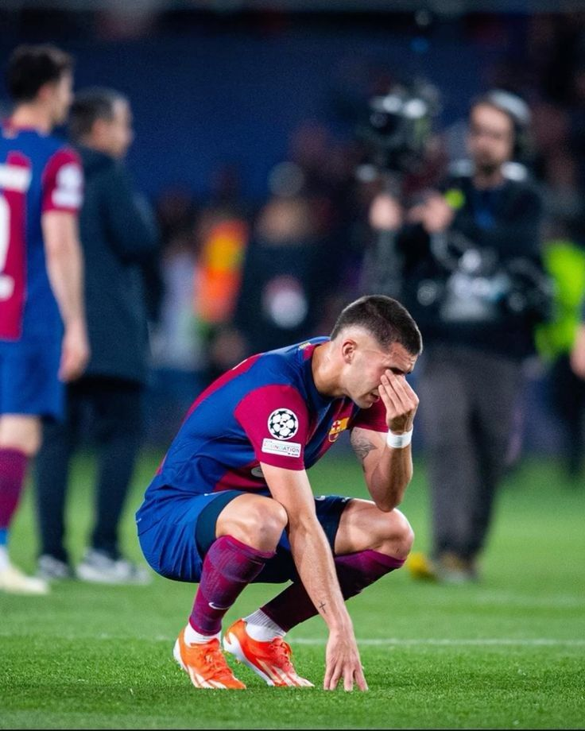

Madrid, 27 Oktober 2024 - Real Madrid kembali mencatatkan sejarah sebagai klub sepak bola dengan raihan terbanyak gelar Liga Champions Eropa, setelah berhasil memenangkan trofi ke-15 mereka dalam laga final yang penuh drama. Pertandingan yang digelar di Stadion Olimpico Roma itu menyaksikan Madrid mengalahkan lawannya dengan skor 3-1, mempertegas dominasi mereka di panggung Eropa. Madrid, 27 Oktober 2024 - Real Madrid kembali mencatatkan sejarah sebagai klub sepak bola dengan raihan terbanyak gelar Liga Champions Eropa, setelah berhasil memenangkan trofi ke-15 mereka dalam laga final yang penuh drama. Pertandingan yang digelar di Stadion Olimpico Roma itu menyaksikan Madrid mengalahkan lawannya dengan skor 3-1, mempertegas dominasi mereka di panggung Eropa. Pelatih Madrid, yang membawa klub ini ke kemenangan, menyampaikan kebanggaannya kepada para pemain. "Ini adalah hasil kerja keras tim, dedikasi tanpa henti, dan semangat yang tak pernah padam. Meraih gelar ke-15 adalah mimpi yang menjadi kenyataan," ujarnya. Di sisi lain, para pendukung Real Madrid merayakan kemenangan ini dengan penuh sukacita di kota Madrid. Jalanan ibukota Spanyol dipenuhi oleh ribuan pendukung yang mengenakan warna kebanggaan klub, sementara parade kemenangan besar diperkirakan akan digelar minggu depan untuk menyambut para pahlawan mereka. Dengan pencapaian ini, Real Madrid terus mengukuhkan diri sebagai ikon dalam sejarah sepak bola, tidak hanya di Spanyol tetapi juga di seluruh dunia. Gelar ke-15 ini semakin memperkuat reputasi mereka sebagai klub dengan DNA pemenang yang tak tertandingi di kancah sepak bola Eropa.
BARCA BERAPA UCL?
BACA BERITA LEBIH LENGKAP DISINIBarcelona, 27 Oktober 2024 - Harapan Barcelona untuk meraih kemenangan dalam laga El Clasico melawan rival abadinya, Real Madrid, pupus setelah mengalami kekalahan dengan skor 1-3 di hadapan pendukung sendiri di Camp Nou. Pertandingan yang sangat dinantikan ini berakhir dengan kekecewaan bagi Blaugrana, sementara Los Blancos sukses membawa pulang kemenangan penting yang semakin mengukuhkan posisi mereka di puncak klasemen La Liga. Real Madrid membuka keunggulan dengan gol cepat pada babak pertama yang memanfaatkan kelengahan lini belakang Barcelona. Meski sempat mendapat perlawanan sengit dari tuan rumah, Madrid berhasil menambah keunggulan lewat serangan balik mematikan. Barcelona mencoba bangkit pada babak kedua, namun upaya mereka hanya menghasilkan satu gol hiburan. Gol penutup dari Real Madrid yang tercipta menjelang akhir pertandingan memastikan kemenangan bagi tim tamu. Pelatih Barcelona menyampaikan kekecewaannya atas hasil ini dan mengakui bahwa timnya perlu bekerja lebih keras untuk menghadapi laga-laga besar. "Kami kehilangan kendali permainan di beberapa momen penting, dan itu sangat disayangkan. Kami harus belajar dari kekalahan ini dan segera berbenah," ujarnya dalam konferensi pers pasca-pertandingan. Kekalahan ini memicu reaksi kecewa dari para pendukung Barcelona yang memadati Camp Nou. Mereka berharap tim kesayangan mereka bisa menunjukkan performa lebih baik di pertandingan besar seperti El Clasico. Kekecewaan terlihat jelas, namun mereka tetap memberikan dukungan kepada pemain dengan harapan Barcelona bisa bangkit di laga berikutnya. Di sisi lain, kemenangan ini memberikan kepercayaan diri besar bagi Real Madrid, yang kini semakin memantapkan posisi mereka di klasemen liga. Para pemain Real Madrid menunjukkan permainan yang solid, dengan strategi yang mampu menekan lawan dan mengontrol permainan. Dengan kemenangan ini, Real Madrid berhasil menambah rekor kemenangan dalam sejarah pertemuan El Clasico dan mengirim pesan kuat kepada para pesaing di La Liga. Hasil El Clasico ini tidak hanya berdampak pada perolehan poin, tetapi juga pada psikologi kedua tim dalam menghadapi sisa musim. Real Madrid berhasil menjaga momentum positif mereka, sementara Barcelona harus segera mengevaluasi diri jika ingin tetap bersaing di papan atas klasemen.
BARCA BADUT
NANTIKAN INFO TERBARU TERKAIT SEPAK BOLA SELANJUTNYA
Copyright Madrid Otw 16 UCL